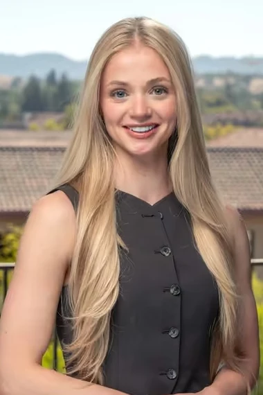

hi, I'm
Mary Blankemeier
I'm focused on getting more people to the starting line,
in sport, in health care, and in AI.
Stanford GSB ’27, founder of Run Your City, ex-Bain, former D1 miler, painter

Right now
fall 2026- Stanford GSB MBA '27, AI@GSB Fellow
- Run Your City Building a team for every kid
- Out of Our Depth Learning AI out loud
- Paints by Blanks Painting to support Run Your City
- Build at the intersection of health care and AI after business school
Run Your City
I started Run Your City with the belief that no kid should be sidelined from an experience that shaped so many of us.
Today we pair college athletes with kids who've been left out of sports, especially young girls, kids with disabilities and kids from low-income backgrounds. Running gets everyone moving, but the real point is belonging: every kid gets a team, a mentor and a finish line, completely free.
10,000 kids, 2,000 volunteers, 4 countries

Out of Our Depth
My husband Josh and I started a podcast to learn AI out loud.
- 005How to Make Your AI Look and Sound Like You
- 004We Asked ChatGPT to Coach Our Ultramarathon
- 003What the Heck is an AI Agent?
- 000We Can't Keep Up with AI Either (So We Started a Podcast!)
Paints by Blanks
I started painting after a running injury in college and seriously caught the bug.
50+ originals have found homes since then, every dollar goes to Run Your City.


Résumé
Say hi
For ideas, running routes, a painting, or no reason at all.
Mary